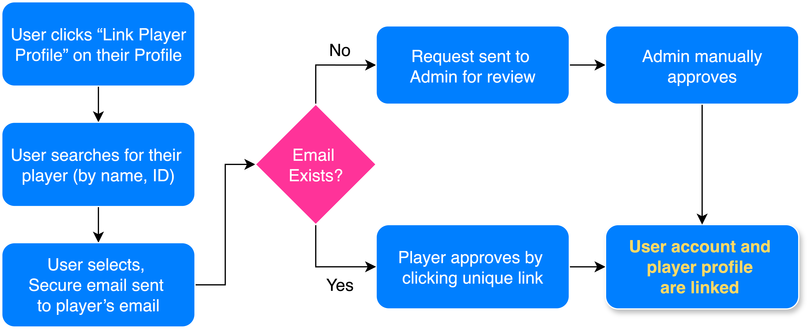

The National Collegiate Table Tennis Association (NCTTA) is the nonprofit that organizes and oversees college table tennis competitions across the U.S., Canada, and Puerto Rico. With more than 150 schools involved, it gives student-athletes the chance to represent their universities and compete at a national level. NCTTA plays an important role in growing table tennis as a recognized collegiate sport. It runs divisionals, regionals, and national championships while also supporting schools in starting and maintaining their own table tennis programs
In college, I was both a player for our school's team as well as an officer for our club, giving me several unique perspectives to NCTTA. I was eager to have the opportunity to give back in a concrete way by improving the infrastructure that supports the entire league, while simultaneously learning and applying new skills to help my own career.
Player-User Linking System Right now, users and players in the system aren't linked, which makes it harder to manage accounts and confirm identities. Therefore, our objective is to create a process for site users to link their account to their corresponding player. This needs to be easy to understand and secure to prevent impersonation.
